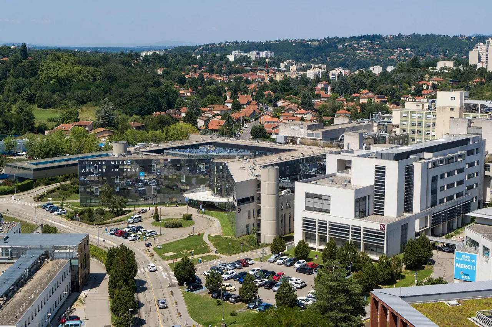
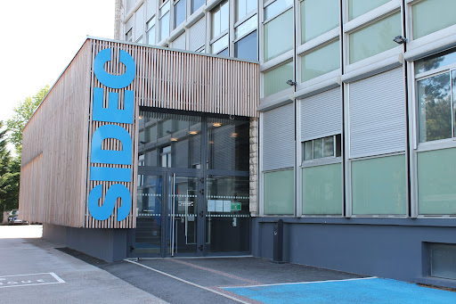

Missions variées en intérim ~60 jours entre 2025 et 2026
Développement d'une forte capacité d'adaptation à travers diverses missions de courtes durées sur le terrain :
Expériences professionnelles
Mes stages m'ont confronté à des environnements variés, du service public à l'entreprise privée. J'y ai développé un sens pratique de la maintenance, de l'écoute utilisateur et de la résolution d'incidents.
Développement d'une forte capacité d'adaptation à travers diverses missions de courtes durées sur le terrain :
Expérience en intérim sur le terrain avec gestion des flux, respect strict des consignes de sécurité et relation avec le public. Ce job d'été a renforcé mon sens des responsabilités, ma capacité d'adaptation et mon efficacité dans un environnement exigeant.
Stage au service informatique avec découverte du fonctionnement d'un SI sensible: assistance aux utilisateurs, maintenance de postes et participation au suivi des interventions. Cette expérience m'a appris la rigueur attendue dans un contexte où la fiabilité et la traçabilité sont essentielles.
Expérience formatrice dans le secteur privé: adaptation rapide, tâches variées et contact direct. Ce stage a renforcé mon aisance et ma capacité à rester efficace dans un rythme soutenu.
Découverte d'un contexte orienté sécurité physique et déploiement. J'ai pu observer les étapes clés, de l'analyse du besoin à la mise en service, avec une attention particulière portée à la fiabilité.
Stage orienté vers les notions d'infrastructure réseau et le maintien en condition opérationnelle des postes. J'ai renforcé mes compétences de diagnostic, de traçabilité et de suivi des demandes.
J'ai pu contribuer à des opérations de maintenance et mieux comprendre la gestion des priorités en conditions réelles. Cette étape m'a aidé à gagner en autonomie et en confiance dans la prise d'initiative.
Participation à plusieurs interventions dans un contexte à grande échelle. Cette expérience m'a montré l'importance de la coordination entre équipes techniques et de la fiabilité des procédures en environnement sensible.
Immersion initiale dans le métier avec observation des diagnostics et des procédures d'intervention. J'y ai appris l'importance de l'ordre, de la sécurité et d'une communication claire avec les clients.

